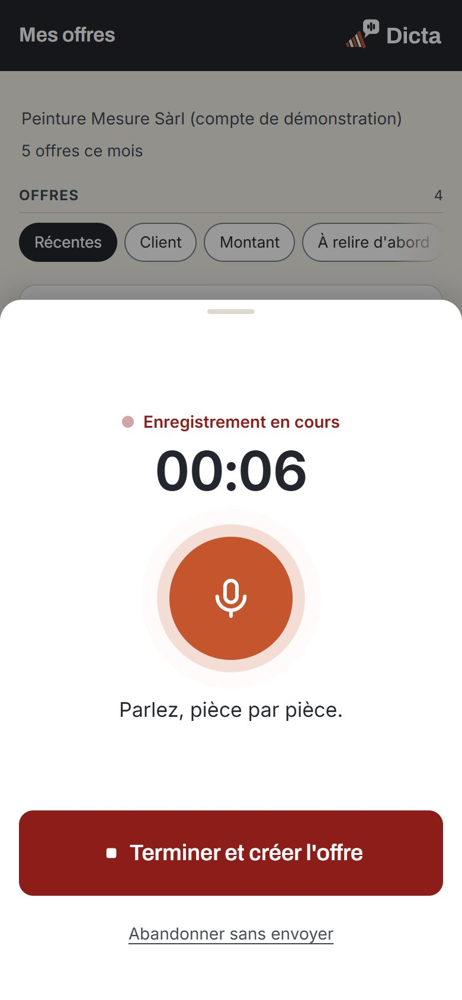
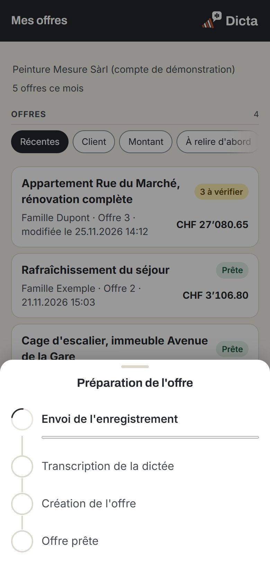
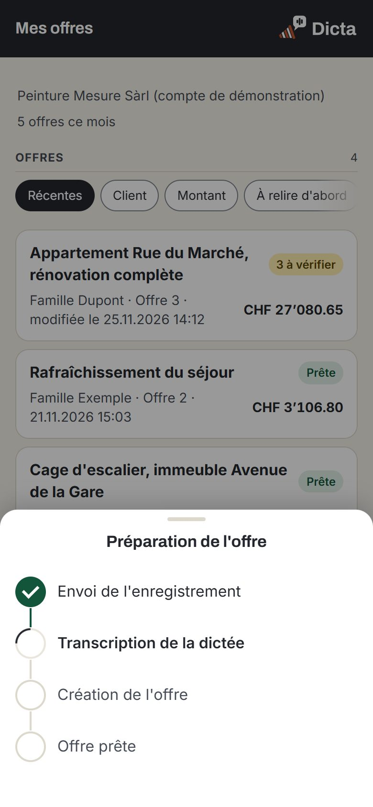
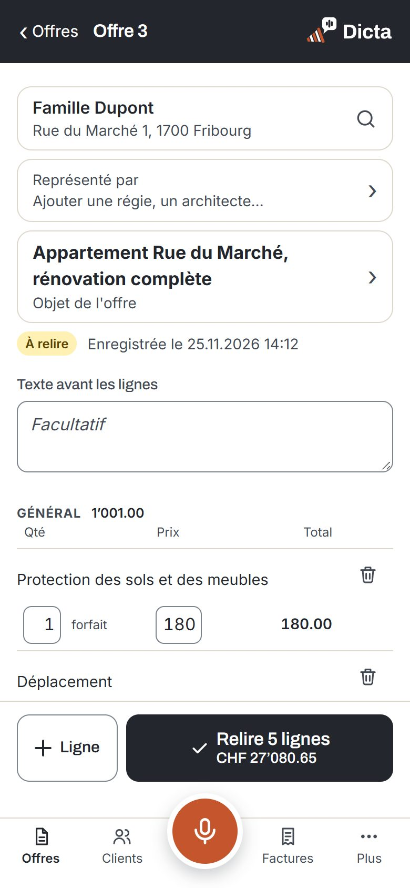

Parcours de la dictée : deux pistes
Du toucher sur le micro jusqu'à l'offre à relire. Pour chaque étape : l'écran actuel en capture, puis une piste « sage » (A) et une piste « franche » (B). Votre choix se pose sous chaque étape ; les étapes se mélangent (par exemple l'enregistrement de B avec l'attente de A).
Déjà réglé
Ce qui ne va pas aujourd'hui
Captures du parcours actuel sur le serveur local, compte de démonstration, envoi simulé (aucune dictée transcrite). Cliquez une capture pour l'agrandir.




Les deux pistes
Mêmes écrans, mêmes couleurs.
- Le rond suit la voix ; « Le micro vous entend » ; une alerte après 5 secondes de silence.
- L'attente annonce sa durée, une barre d'ensemble avance, trois étapes au lieu de quatre.
- L'offre s'ouvre sur ses lignes, un bandeau vert dit le résultat, les lignes arrivent l'une après l'autre.
Tout se passe dans le navigateur, le serveur ne change pas.
L'enregistrement et l'attente prennent tout l'écran, en sombre, à la manière du Dictaphone de l'iPhone.
- Onde de la voix qui défile, conseils qui changent toutes les 6 secondes, gros bouton d'arrêt au centre, Pause.
- Pendant l'attente : un anneau qui se remplit, le texte entendu qui s'affiche, les lignes qui se dessinent.
- À l'arrivée, un écran de résultat (lignes, à vérifier, total), puis l'offre.
Le texte entendu demande une modification du serveur ; la Pause est une fonction nouvelle.
Démo : jouez les deux pistes
Touchez le micro rouge de chaque téléphone, parlez si vous voulez (la voix est simulée), puis « Terminer ». L'attente est raccourcie à 12 secondes pour la démo ; en vrai, 30 à 50 secondes.
Piste A
Piste B
Étape 1 : enregistrement
Actuel
L'écran refait hier. Les halos tournent en boucle, qu'on parle ou non.
Piste A
Le rond grandit avec la voix, « Le micro vous entend » le confirme.
Piste B
Plein écran sombre : l'onde défile, un conseil change toutes les 6 secondes, l'arrêt est au centre sous le pouce, Abandonner et Pause de part et d'autre.
A ou B : 5 secondes sans voix
L'alerte prend la place de « Le micro vous entend ». Elle vaut pour les deux pistes ; c'est le « message Bluetooth » de la tâche 519.
B : en pause
Le minuteur s'arrête et grisaille, l'onde se fige, Pause devient Reprendre.
Écran d'enregistrement
Alerte après 5 secondes sans voix
Le micro mesure le niveau de la voix ; rien n'est envoyé pour cela. Vaut pour A comme pour B.
Pause pendant la dictée (fonction nouvelle, piste B ; possible aussi dans A)
Le temps en pause ne compte pas dans les 30 minutes. Safari annonce la pause de l'enregistreur depuis sa version 14.1 : non vérifié sur iPhone, à prouver avant de la livrer.
Étape 2 : envoi et préparation
Actuel
Quatre étapes, pas de durée, la liste d'avant derrière le voile.
Piste A
« Environ 15 secondes » se met à jour, une barre d'ensemble avance, l'envoi affiche son pourcentage, « Offre prête » n'est plus une étape.
Piste B
L'anneau se remplit, le texte entendu s'affiche dès la transcription : l'artisan vérifie ce que la machine a compris pendant qu'elle travaille.
Écran d'attente
Afficher le texte entendu pendant l'attente
Le serveur l'a dès la fin de la transcription ; il faut le joindre à l'état du traitement que la page interroge chaque seconde (environ 1 heure). Possible aussi dans la piste A.
Étape 3 : offre prête
Actuel
Les lignes dictées sont sous le pli.
Piste A
La page s'ouvre sur ses lignes. Le bandeau dit « 5 lignes, dont 3 à vérifier » et se ferme d'un toucher ; un filet jaune marque chaque ligne à vérifier. Le texte avant les lignes se replie en un lien tant qu'il est vide.
Piste B
Un écran de résultat, puis « Relire les 3 lignes à vérifier » mène à la première. Un toucher de plus que A, en échange d'un vrai moment d'arrivée.
Arrivée de l'offre
Ce que chaque piste coûte
| Piste | Travail (estimation de Claude) | Ce qui change hors de l'écran |
|---|---|---|
| A | Environ 3 heures | Rien. La jauge de la voix reprend la tâche 519 (« Jauge lissée et message Bluetooth »), encore ouverte. |
| B | Environ 7 heures | Le texte entendu dans l'état du traitement (serveur, environ 1 heure). La Pause touche la durée dictée, la limite des 30 minutes et la reprise d'une dictée coupée. |
| Mélange | Selon les étapes retenues | Chaque étape se code à part ; l'ordre conseillé est l'attente, puis l'offre prête, puis l'enregistrement. |
Vos réponses
Elles restent dans ce navigateur. Le bouton copie le texte à coller dans la conversation.